E-mails MBA 2027, v3
Versão anterior. A versão atual é a v4.
24 e-mails (8 por curso), na estrutura da proposta validada na régua v3. Clique na imagem para abrir o HTML.
MBA em Engenharia da Qualidade
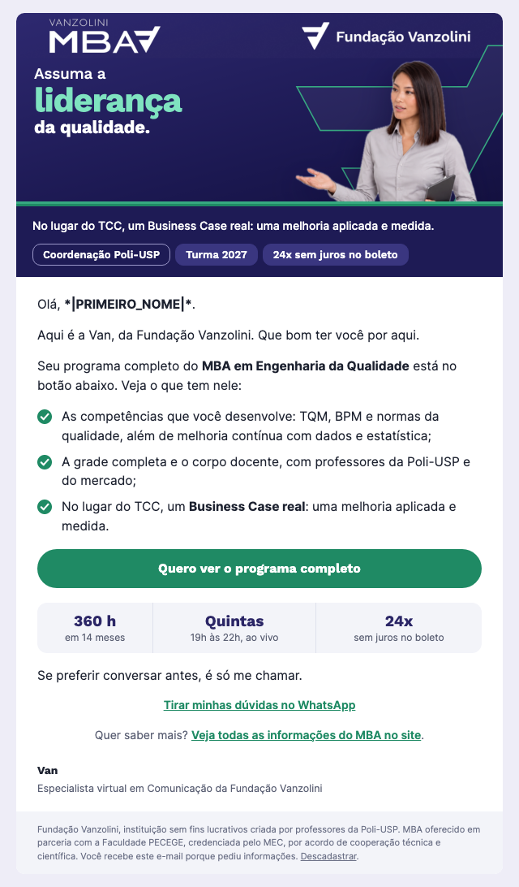
E1 · EntradaDia 0 · Todos que convertem no formulárioAssunto A: Assuma a liderança da qualidade: seu programa chegouAssunto B: Seu programa do MBA em Engenharia da Qualidade T1 · Guia gratuitoDia 1 a 3 · Quem clicou no E1Assunto A: Guia de ferramentas da Qualidade para aplicar jáAssunto B: PDCA, FMEA e indicadores: seu guia gratuito
T1 · Guia gratuitoDia 1 a 3 · Quem clicou no E1Assunto A: Guia de ferramentas da Qualidade para aplicar jáAssunto B: PDCA, FMEA e indicadores: seu guia gratuito T2 · Na práticaDia 4 a 6 · Quem clicou no E1 e segue na trilhaAssunto A: O que muda na sua atuação quando a Qualidade vira estratégiaAssunto B: Três coisas que fazem diferença na prática
T2 · Na práticaDia 4 a 6 · Quem clicou no E1 e segue na trilhaAssunto A: O que muda na sua atuação quando a Qualidade vira estratégiaAssunto B: Três coisas que fazem diferença na prática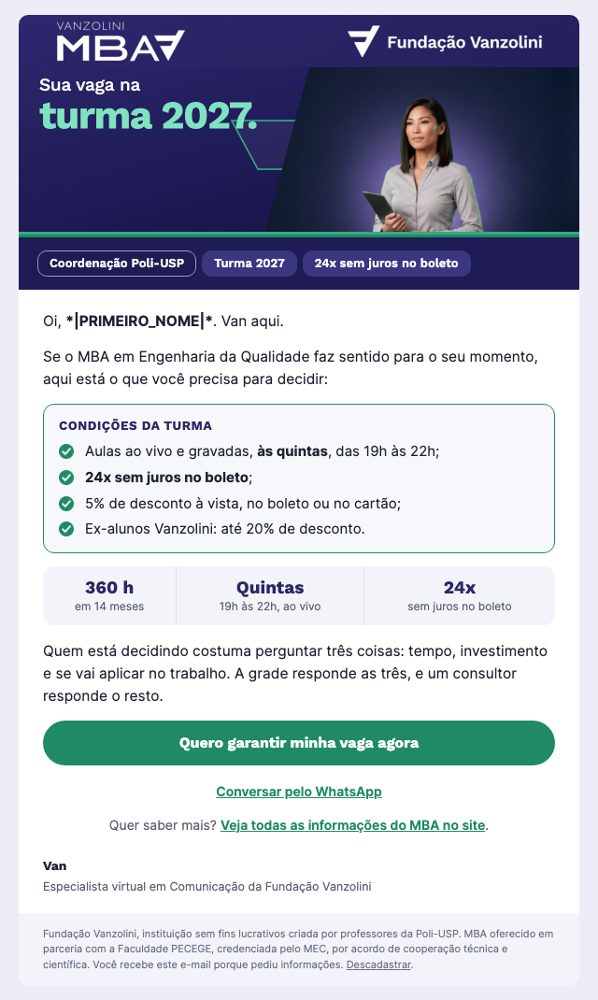
T3 · Condições e decisãoDia 7 a 9 · Quem segue na trilha e ainda não consta como matriculadoAssunto A: Condições de matrícula do MBA em Eng. da QualidadeAssunto B: Garanta sua vaga na turma 2027 do MBA em Qualidade O1 · Abriu, não clicouDia 3 · Abriu o E1 e não clicouAssunto A: Você já viu a grade do MBA em Engenharia da Qualidade?Assunto B: O que um MBA em Qualidade entrega além do conteúdo
O1 · Abriu, não clicouDia 3 · Abriu o E1 e não clicouAssunto A: Você já viu a grade do MBA em Engenharia da Qualidade?Assunto B: O que um MBA em Qualidade entrega além do conteúdo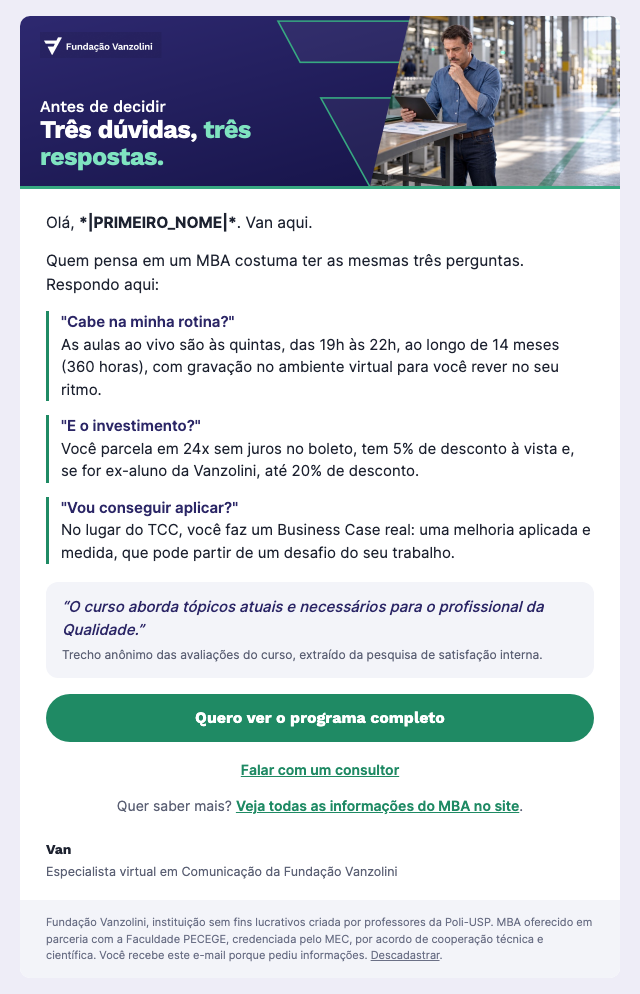
O2 · Três dúvidas, três respostasDia 7 · Abriu e não clicou, depois do O1Assunto A: As 3 dúvidas mais comuns sobre o MBA em QualidadeAssunto B: Cabe na minha rotina? Respondemos aqui R1 · ReenvioDia 4 · Quem não abriu o E1Assunto A: *|PRIMEIRO_NOME|*, o programa do MBA continua aquiAssunto B: Qualidade como estratégia: veja a grade do MBA
R1 · ReenvioDia 4 · Quem não abriu o E1Assunto A: *|PRIMEIRO_NOME|*, o programa do MBA continua aquiAssunto B: Qualidade como estratégia: veja a grade do MBAFecho · Último diaÚltimo dia de inscrição · Quem abriu ou clicou em algum e-mailAssunto A: Últimas horas: inscrições do MBA em Eng. da QualidadeAssunto B: Hoje é o último dia para entrar na turma 2027 MBA em IA Aplicada à Gestão Estratégica de Projetos
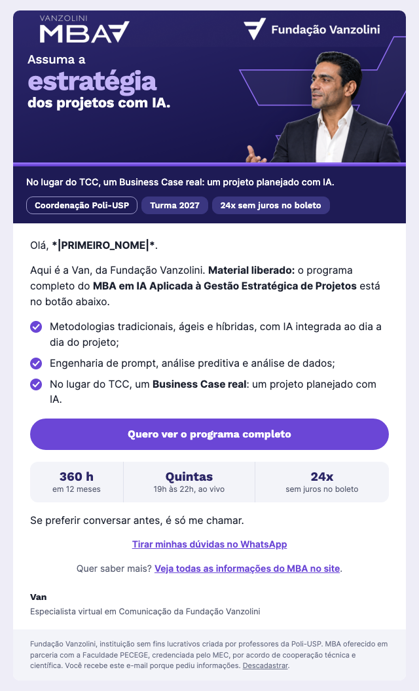
E1 · EntradaDia 0 · Todos que convertem no formulárioAssunto A: Material liberado: seu programa do MBA em IA e ProjetosAssunto B: Assuma a estratégia dos projetos com IA: veja o programa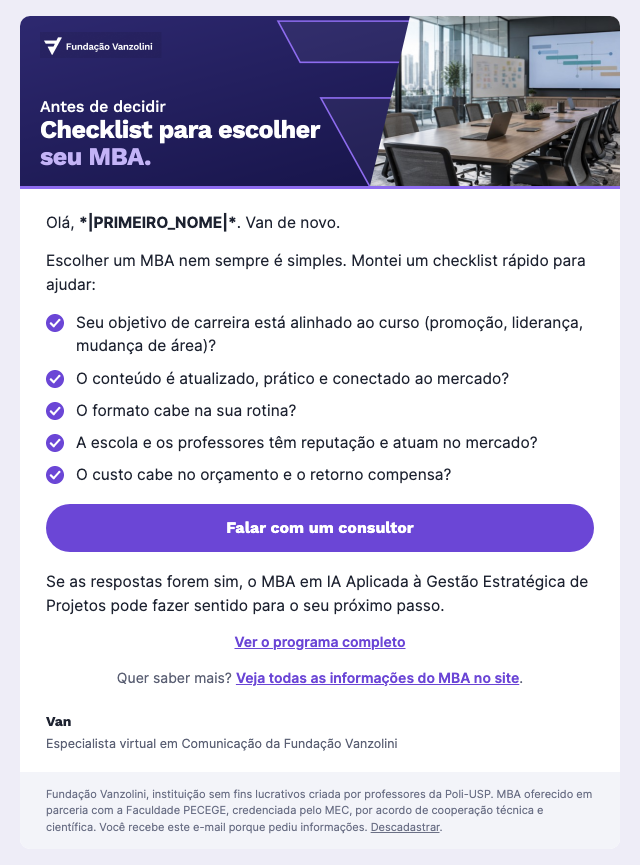
T1 · Antes de decidirDia 1 a 3 · Quem clicou no E1Assunto A: Checklist: como escolher o MBA ideal para sua carreiraAssunto B: 5 perguntas antes de escolher seu MBA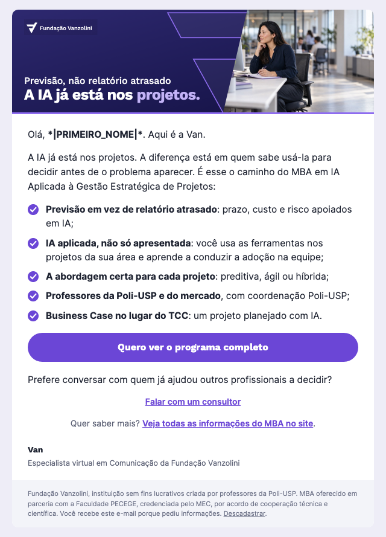
T2 · Previsão, não relatório atrasadoDia 4 a 6 · Quem clicou no E1 e segue na trilhaAssunto A: Você está preparado para os avanços da IA em projetos?Assunto B: Previsão de prazo, custo e risco com IA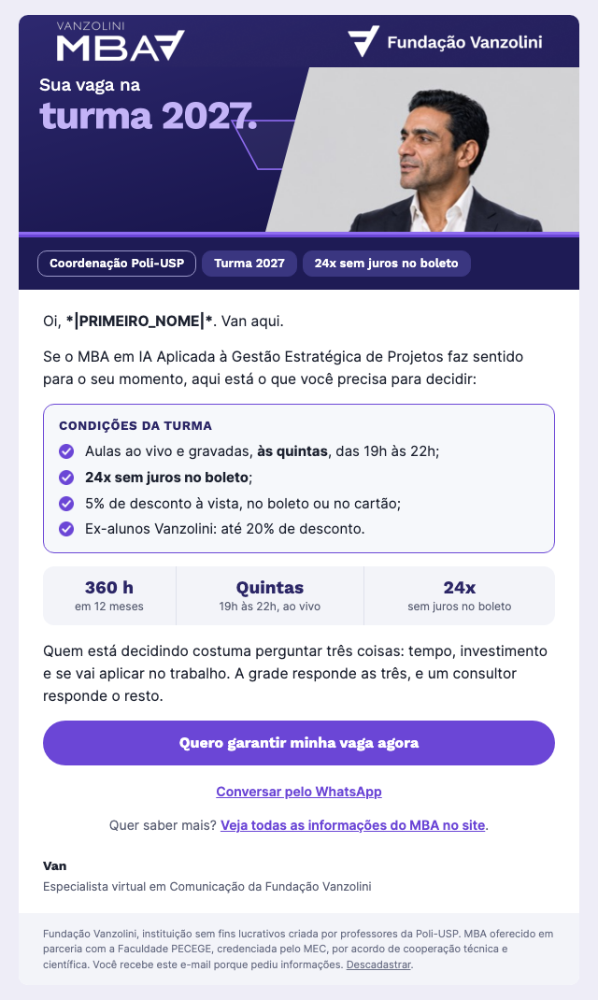
T3 · Condições e decisãoDia 7 a 9 · Quem segue na trilha e ainda não consta como matriculadoAssunto A: Condições de matrícula do MBA em IA e ProjetosAssunto B: Garanta sua vaga na turma 2027 do MBA em IA e Projetos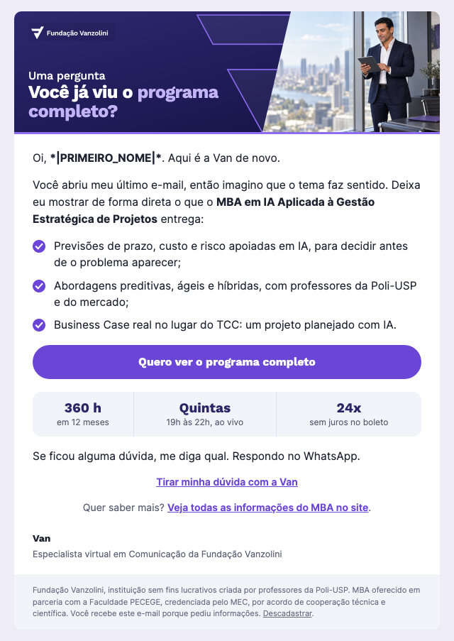
O1 · Abriu, não clicouDia 3 · Abriu o E1 e não clicouAssunto A: Notei que você ainda não viu o programa completoAssunto B: O que o MBA em IA e Projetos entrega além do conteúdo O2 · Três dúvidas, três respostasDia 7 · Abriu e não clicou, depois do O1Assunto A: As 3 dúvidas mais comuns sobre o MBA em IA e ProjetosAssunto B: Cabe na minha rotina? Respondemos aqui
O2 · Três dúvidas, três respostasDia 7 · Abriu e não clicou, depois do O1Assunto A: As 3 dúvidas mais comuns sobre o MBA em IA e ProjetosAssunto B: Cabe na minha rotina? Respondemos aquiR1 · ReenvioDia 4 · Quem não abriu o E1Assunto A: *|PRIMEIRO_NOME|*, o programa do MBA continua aquiAssunto B: IA em projetos: veja a grade do MBA 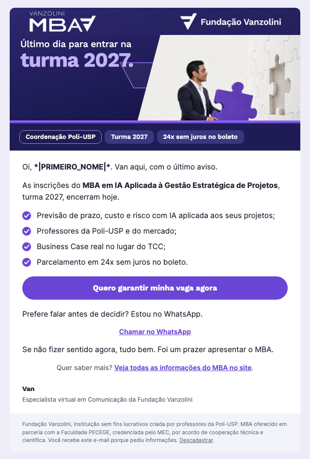
Fecho · Último diaÚltimo dia de inscrição · Quem abriu ou clicou em algum e-mailAssunto A: Últimas horas: inscrições do MBA em IA e ProjetosAssunto B: Hoje é o último dia para entrar na turma 2027MBA em Liderança, IA e Execução Estratégica
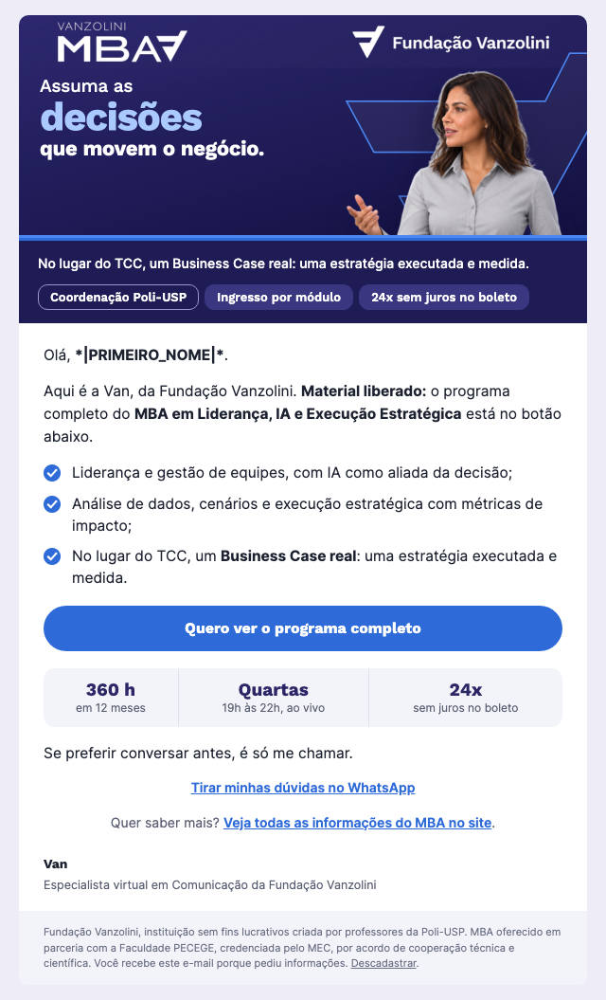
E1 · EntradaDia 0 · Todos que convertem no formulárioAssunto A: Assuma as decisões que movem o negócio: seu programaAssunto B: Material liberado: seu programa do MBA em Liderança e IA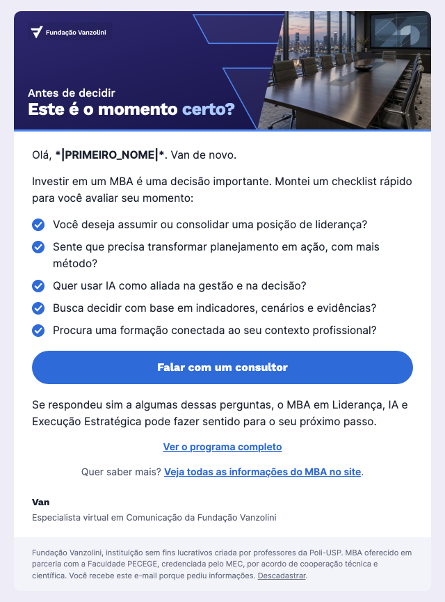
T1 · Antes de decidirDia 1 a 3 · Quem clicou no E1Assunto A: Checklist: este é o momento certo para um MBA?Assunto B: 5 perguntas para avaliar o seu momento T2 · Decisões com dadosDia 4 a 6 · Quem clicou no E1 e segue na trilhaAssunto A: Você está pronto para liderar com IA e dados?Assunto B: Da meta ao plano que acontece
T2 · Decisões com dadosDia 4 a 6 · Quem clicou no E1 e segue na trilhaAssunto A: Você está pronto para liderar com IA e dados?Assunto B: Da meta ao plano que acontece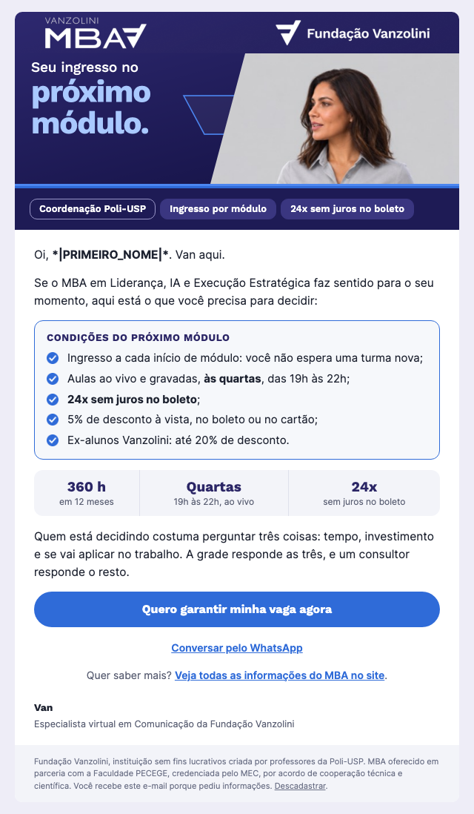
T3 · Condições e decisãoDia 7 a 9 · Quem segue na trilha e ainda não consta como matriculadoAssunto A: Condições de matrícula do MBA em Liderança, IA e ExecuçãoAssunto B: Garanta seu ingresso no próximo módulo do MBA O1 · Abriu, não clicouDia 3 · Abriu o E1 e não clicouAssunto A: Notei que você ainda não viu o programa completoAssunto B: O que o MBA em Liderança e IA entrega além do conteúdo
O1 · Abriu, não clicouDia 3 · Abriu o E1 e não clicouAssunto A: Notei que você ainda não viu o programa completoAssunto B: O que o MBA em Liderança e IA entrega além do conteúdo O2 · Três dúvidas, três respostasDia 7 · Abriu e não clicou, depois do O1Assunto A: As 3 dúvidas mais comuns sobre o MBA em Liderança e IAAssunto B: Cabe na minha rotina? Respondemos aqui
O2 · Três dúvidas, três respostasDia 7 · Abriu e não clicou, depois do O1Assunto A: As 3 dúvidas mais comuns sobre o MBA em Liderança e IAAssunto B: Cabe na minha rotina? Respondemos aqui R1 · ReenvioDia 4 · Quem não abriu o E1Assunto A: *|PRIMEIRO_NOME|*, o programa do MBA continua aquiAssunto B: Liderança e IA: veja a grade do MBA
R1 · ReenvioDia 4 · Quem não abriu o E1Assunto A: *|PRIMEIRO_NOME|*, o programa do MBA continua aquiAssunto B: Liderança e IA: veja a grade do MBAFecho · Último diaÚltimo dia de inscrição · Quem abriu ou clicou em algum e-mailAssunto A: Últimas horas: inscrições do MBA em Liderança e IAAssunto B: Hoje é o último dia para entrar no próximo módulo